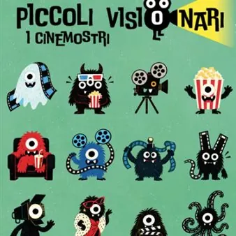

da sab 24 ott a sab 5 dic
Piccoli Visionari
Boschi proibiti, apprendiste streghe, gatti col cappello e pecore pronte a tutto per difendere la loro fattoria: dal 24 ottobre torna al Visionario l’appuntamento con "Piccoli Visionari" Ad accompagnare il nuovo ciclo dedicato ai più piccoli le originali cartoline collezionabili…
 Indicazioni
Indicazioni
- Costi e prenotazioni
- Costo non indicato · Prenotazione non indicata
- Programma
- Programma da verificare. Apri la fonte ufficiale per orari e possibili aggiornamenti.
- In caso di maltempo
- Nessuna indicazione specifica pubblicata.
- Note
- Acquisito automaticamente dalla fonte.
L’EVENTO
Descrizione completa
Boschi proibiti, apprendiste streghe, gatti col cappello e pecore pronte a tutto per difendere la loro fattoria: dal 24 ottobre torna al Visionario l’appuntamento con " Piccoli Visionari "
Ad accompagnare il nuovo ciclo dedicato ai più piccoli le originali cartoline collezionabili dei “cinemostri” . Le proiezioni saranno accompagnate come di consueto da una deliziosa merenda . sabato 24 ottobre ore 15.00 e 17.00
WILDWOOD – I SEGRETI DEL BOSCO PROIBITO Acquista il biglietto >
di T. Knight, USA 2026, 139′
consigliato 8+ Prue è una ragazzina intelligente e determinata. La sua vita a Portland viene sconvolta quando una sinistra nube di corvi rapisce il fratellino Mac e lo trascina oltre i confini della città. Il piccolo è prigioniero nel cuore dell’Impenetrabile Bosco Proibito, un luogo da cui nessuno è mai tornato. Prue decide di affrontare l’ignoto per salvarlo… Il nuovo film dei visionari creatori di Coraline e Kubo e la spada magica . sabato 31 ottobre ore 15.00 e 17.00
SHAUN VITA DA PECORA – OPERAZIONE Z.U.C.C.A.
di S. Cox, M. Walker, Regno Unito/Francia/USA 2026, 91′
consigliato 6+ Halloween è alle porte, Shaun e tutti gli animali della fattoria si preparano per festeggiarlo al meglio coltivando un magnifico campo di zucche. Ma quando tutto sembrava ormai pronto, il contadino misteriosamente scompare e arriva dal bosco uno spaventoso mostro. Sarà compito di Shaun e i suoi amici salvare la fattoria dalla pelosa creatura e ritrovare l’amato contadino in tempo per la grande festa. sabato 7 novembre ore 15.00 e 17.00
IL GATTO COL CAPPELLO
di A. Carloni, E. Rivinoja, USA 2026, 98′
consigliato 4+ Dal meraviglioso e stravagante mondo di Dr. Seuss, Il Gatto col Cappello arriva per la prima volta sul grande schermo da protagonista di un film d’animazione: un’avventura epica, inedita e piena di brio, dove regnano magia, caos e tanta allegria. Facendo ciò che gli riesce meglio, il Gatto porta gioia ai bambini con il suo umorismo esilarante, unico e irriverente, trasportandoli in un viaggio fantastico verso un mondo mai visto prima. sabato 28 novembre ore 15.00 e 17.00
HEXE – IL REGNO DELLE STREGHE
di J. Hand, F. Veerasunthorn, J. Trinidad, USA 2026, 100′
consigliato 7+ Billie è un’adolescente impulsiva e anticonformista che scopre di avere segrete doti magiche che una volta scatenate la catapultano in uno spettacolare viaggio nel vasto regno delle streghe chiamato Hexe. Costretta a fare squadra con la iper-prudente madre Alice, scoprirà dei misteri di famiglia in grado di cambiare per sempre il magico mondo delle streghe. sabato 5 dicembre ore 15.00 e 17.00
KIKI – CONSEGE A DOMICILIO
di H. Miyazaki, Giappone 1989/2026, 102′
consigliato 6+ Compiuti 13 anni Kiki, una streghetta simpatica e maldestra, parte alla ricerca di una città bagnata dal mare in cui svolgere il suo anno di apprendistato. In compagnia dell’inseparabile gatto nero parlante Jiji, Kiki arriva nella città di Koriko dove inizia a guadagnarsi da vivere facendo consegne a domicilio a cavallo della sua scopa di saggina. Ma nella vita, si sa, non tutto fila sempre liscio e le sorprese sono dietro l’angolo. Tutti i film della rassegna saranno replicati la domenica mattina. Biglietto under 12: €4,50; over 12: €5,50 Per maggiori informazioni sulla programmazione consultare il sito www.visionario.movie oppure facebook.com/VisionarioUdine
IL PROGRAMMA
Programma e orari
Appuntamenti raccolti dalle fonti elencate. Dove manca un orario, non è ancora disponibile in questa scheda.
Programma pubblicato
- Dal 2026-10-24 al 2026-12-05
INFORMAZIONI UTILI
Prima di partire
- Controllare la fonte prima di partire.
ORGANIZZAZIONE